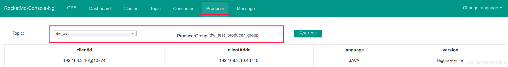
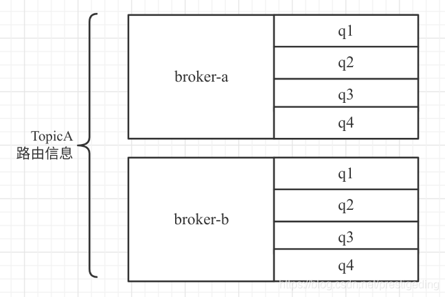
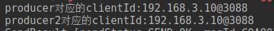
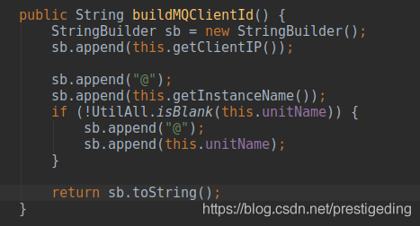

- 01 搭建学习环境准备篇.md.html
- 02 RocketMQ 核心概念扫盲篇.md.html
- 03 消息发送 API 详解与版本变迁说明.md.html
- 04 结合实际应用场景谈消息发送.md.html
- 05 消息发送核心参数与工作原理详解.md.html
- 06 消息发送常见错误与解决方案.md.html
- 07 事务消息使用及方案选型思考.md.html
- 08 消息消费 API 与版本变迁说明.md.html
- 09 DefaultMQPushConsumer 核心参数与工作原理.md.html
- 10 DefaultMQPushConsumer 使用示例与注意事项.md.html
- 11 DefaultLitePullConsumer 核心参数与实战.md.html
- 12 结合实际场景再聊 DefaultLitePullConsumer 的使用.md.html
- 13 结合实际场景顺序消费、消息过滤实战.md.html
- 14 消息消费积压问题排查实战.md.html
- 15 RocketMQ 常用命令实战.md.html
- 16 RocketMQ 集群性能摸高.md.html
- 17 RocketMQ 集群性能调优.md.html
- 18 RocketMQ 集群平滑运维.md.html
- 19 RocketMQ 集群监控（一）.md.html
- 20 RocketMQ 集群监控（二）.md.html
- 21 RocketMQ 集群告警.md.html
- 22 RocketMQ 集群踩坑记.md.html
- 23 消息轨迹、ACL 与多副本搭建.md.html
- 24 RocketMQ-Console 常用页面指标获取逻辑.md.html
- 25 RocketMQ Nameserver 背后的设计理念.md.html
- 26 Java 并发编程实战.md.html
- 27 从 RocketMQ 学基于文件的编程模式（一）.md.html
- 28 从 RocketMQ 学基于文件的编程模式（二）.md.html
- 29 从 RocketMQ 学 Netty 网络编程技巧.md.html
- 30 RocketMQ 学习方法之我见.md.html
- 捐赠
05 消息发送核心参数与工作原理详解
经过前面几篇的讲解，我相信大家对 RocketMQ 的消息发送已经有了一个较为详细的认识，已经能够非常顺畅地使用 DefaultMQProducer 相关的 API。
本篇将重点关注 DefaultMQProducer 中的相关属性，以便从这些属性窥探 RocketMQ 消息发送较为底层的原理。

从 DefaultMQProducer 的类图就可以看出其属性主要来源于 ClientConfig、DefaultMQProducer，故接下来将分两部分进行介绍。
DefaultMQProducer 参数一览
DefaultMQProducer 的参数如下：
InternalLogger log = ClientLogger.getLog()
客户端的日志实现类，RocketMQ 客户端的日志路径为 ${user.home}/logs/rocketmqlogs/rocketmq_client.log。在排查问题时可以从日志文件下手，寻找错误日志，为解决问题提供必要的信息。其中 user.home 为用户的主目录。
producerGroup
发送者所属组，开源版本的 RocketMQ，发送者所属组主要的用途是事务消息，Broker 需要向消息发送者回查事务状态。可以通过相关命令或 RocketMQ-Console 查看某一个 Topic 指定消费组的客户端，如下图所示：

defaultTopicQueueNums = 4
通过生产者创建 Topic 时默认的队列数量。
sendMsgTimeout = 3000
消息发送默认超时时间，单位为毫秒。值得注意的是在 RocketMQ 4.3.0 版本之前，由于存在重试机制，设置的设计为单次重试的超时时间，即如果设置重试次数为 3 次，则 DefaultMQProducer#send 方法可能会超过 9s 才返回；该问题在 RocketMQ 4.3.0 版本进行了优化，设置的超时时间为总的超时时间，即如果超时时间设置 3s，重试次数设置为 10 次，可能不会重试 10 次，例如在重试到第 5 次的时候，已经超过 3s 了，试图尝试第 6 次重试时会退出，抛出超时异常，停止重试。
compressMsgBodyOverHowmuch
压缩的阔值，默认为 4k，即当消息的消息体超过 4k，则会使用 zip 对消息体进行压缩，会增加 Broker 端的 CPU 消耗，但能提高网络方面的开销。
retryTimesWhenSendFailed
同步消息发送重试次数。RocketMQ 客户端内部在消息发送失败时默认会重试 2 次。请主要该参数与 sendMsgTimeout 会联合起来生效，详情请参照上文所述。
retryTimesWhenSendAsyncFailed
异步消息发送重试次数，默认为 2，即重试 2 次，通常情况下有三次机会。
retryAnotherBrokerWhenNotStoreOK
该参数的本意是如果客户端收到的结果不是 SEND_OK，应该是不问源由的继续向另外一个 Broker 重试，但根据代码分析，目前这个参数并不能按预期运作，应该是一个 Bug。
int maxMessageSize
允许发送的最大消息体，默认为 4M，服务端（Broker）也有 maxMessageSize 这个参数的设置，故客户端的设置不能超过服务端的配置，最佳实践为客户端的配置小于服务端的配置。
sendLatencyFaultEnable
是否开启失败延迟规避机制。RocketMQ 客户端内部在重试时会规避上一次发送失败的 Broker，如果开启延迟失败规避，则在未来的某一段时间内不向该 Broker 发送消息，具体机制在本篇的第三部分详细展开。默认为 false，不开启。
notAvailableDuration
不可用的延迟数组，默认值为 {0L, 0L, 30000L, 60000L, 120000L, 180000L, 600000L}，即每次触发 Broker 的延迟时间是一个阶梯的，会根据每次消息发送的延迟时间来选择在未来多久内不向该 Broker 发送消息。
latencyMax
设置消息发送的最大延迟级别，默认值为 {50L, 100L, 550L, 1000L, 2000L, 3000L, 15000L}，个数与 notAvailableDuration 对应，关于 Broker 的延迟关闭机制将在本文第三部详细探讨。
ClientConfig 参数一览
ClientConfig 顾名思义，客户端的配置，在 RocketMQ 中消息发送者（Producer）和消息消费者（Consumer），即上面的配置生产者、消费者是通用的。
namesrvAddr
NameServer 的地址列表。
clientIP
客户端 IP，通过 RemotingUtil#getLocalAddress 方法获取，在 4.7.0 版本中优先会返回不是 127.0.0.1 和 192.168 开头的最后一个 IPV4 或第一个 IPV6。客户端 IP 主要是用来定位消费者的，clientIP 会当成客户端 id 的组成部分。
如下图所示：在菜单 [Consumer] 列表中点击一个消费组，点击按钮 [client] 可以查阅其客户端（消费者）。

instanceName
客户端实例名称，是客户端标识 CID 的组成部分，在第三篇会详细其 CID 与场景的使用问题。
unitName
定义一个单元，主要用途：客户端 CID 的组成部分；如果获取 NameServer 的地址是通过 URL 进行动态更新的话，会将该值附加到当中，即可以区分不同的获取 NameServer 地址的服务。
clientCallbackExecutorThreads
客户端 public 回调的线程池线程数量，默认为 CPU 核数，不建议改变该值。
namespace
客户端命名空间，从 4.5.1 版本被引入，在第三篇中已详细介绍。
pollNameServerInterval
客户端从 NameServer 更新 Topic 的间隔，默认值 30s，就 Producer、Consumer 会每隔 30s 向 NameServer 更新 Topic 的路由信息，该值不建议修改。
heartbeatBrokerInterval
客户端向 Broker 发送心跳包的时间间隔，默认为 30s，该值不建议修改。
persistConsumerOffsetInterval
客户端持久化消息消费进度的间隔，默认为 5s，该值不建议修改。
核心参数工作机制与使用建议
消息发送高可用设计与故障规避机制
熟悉 RocketMQ 的小伙伴应该都知道，RocketMQ Topic 路由注册中心 NameServer 采用的是最终一致性模型，而且客户端是定时向 NameServer 更新 Topic 的路由信息，即客户端（Producer、Consumer）是无法实时感知 Broker 宕机的，这样消息发送者会继续向已宕机的 Broker 发送消息，造成消息发送异常。那 RocketMQ 是如何保证消息发送的高可用性呢？
RocketMQ 为了保证消息发送的高可用性，在内部引入了重试机制，默认重试 2 次。RocketMQ 消息发送端采取的队列负载均衡默认采用轮循。
在 RocketMQ 中消息发送者是线程安全的，即一个消息发送者可以在多线程环境中安全使用。每一个消息发送者全局会维护一个 Topic 上一次选择的队列，然后基于这个序号进行递增轮循，引入了 ThreadLocal 机制，即每一个发送者线程持有一个上一次选择的队列，用 sendWhichQueue 表示。
接下来举例消息队列负载机制，例如 topicA 的路由信息如下图所示：

正如上图所 topicA 在 broker-a、broker-b 上分别创建了 4 个队列，例如一个线程使用 Producer 发送消息时，通过对 sendWhichQueue getAndIncrement() 方法获取下一个队列。
例如在发送之前 sendWhichQueue 该值为 broker-a 的 q1，如果由于此时 broker-a 的突发流量异常大导致消息发送失败，会触发重试，按照轮循机制，下一个选择的队列为 broker-a 的 q2 队列，此次消息发送大概率还是会失败，即尽管会重试 2 次，但都是发送给同一个 Broker 处理，此过程会显得不那么靠谱，即大概率还是会失败，那这样重试的意义将大打折扣。
故 RocketMQ 为了解决该问题，引入了故障规避机制，在消息重试的时候，会尽量规避上一次发送的 Broker，回到上述示例，当消息发往 broker-a q1 队列时返回发送失败，那重试的时候，会先排除 broker-a 中所有队列，即这次会选择 broker-b q1 队列，增大消息发送的成功率。
上述规避思路是默认生效的，即无需干预。
但 RocketMQ 提供了两种规避策略，该参数由 sendLatencyFaultEnable 控制，用户可干预，表示是否开启延迟规避机制，默认为不开启。
- sendLatencyFaultEnable 设置为 false：默认值，不开启，延迟规避策略只在重试时生效，例如在一次消息发送过程中如果遇到消息发送失败，规避 broekr-a，但是在下一次消息发送时，即再次调用 DefaultMQProducer 的 send 方法发送消息时，还是会选择 broker-a 的消息进行发送，只要继续发送失败后，重试时再次规避 broker-a。
- sendLatencyFaultEnable 设置为 true：开启延迟规避机制，一旦消息发送失败会将 broker-a “悲观”地认为在接下来的一段时间内该 Broker 不可用，在为未来某一段时间内所有的客户端不会向该 Broker 发送消息。这个延迟时间就是通过 notAvailableDuration、latencyMax 共同计算的，就首先先计算本次消息发送失败所耗的时延，然后对应 latencyMax 中哪个区间，即计算在 latencyMax 的下标，然后返回 notAvailableDuration 同一个下标对应的延迟值。
温馨提示：如果所有的 Broker 都触发了故障规避，并且 Broker 只是那一瞬间压力大，那岂不是明明存在可用的 Broker，但经过你这样规避，反倒是没有 Broker 可用来，那岂不是更糟糕了？针对这个问题，会退化到队列轮循机制，即不考虑故障规避这个因素，按自然顺序进行选择进行兜底。
笔者实战经验分享
按照笔者的实践经验，RocketMQ Broker 的繁忙基本都是瞬时的，而且通常与系统 PageCache 内核的管理相关，很快就能恢复，故不建议开启延迟机制。因为一旦开启延迟机制，例如 5 分钟内不会向一个 Broker 发送消息，这样会导致消息在其他 Broker 激增，从而会导致部分消费端无法消费到消息，增大其他消费者的处理压力，导致整体消费性能的下降。
客户端 ID 与使用陷进
介绍客户端 ID 主要的目的是，能在如下场景正确使用消息发送与消费。
- 同一套代码能否在同一台机器上部署多个实例？
- 同一套代码能向不同的 NameServer 集群发送消息、消费消息吗？
本篇的试验环境部署架构如下：

部署了两套 RocketMQ 集群，在 DefaultCluster 集群上创建 Topic——dw_test_01，并在 DefaultClusterb 上创建 Topic——dw_test_02，现在的需求是 order-service-app 要向 dw_test_01、dw_test_02 上发送消息。给出的示例代码如下：
public static void main(String[] args) throws Exception{
// 创建第一个生产者
DefaultMQProducer producer = new DefaultMQProducer("dw_test_producer_group1");
producer.setNamesrvAddr("192.168.3.10:9876");
producer.start();
// 创建第二个生产者
DefaultMQProducer producer2 = new DefaultMQProducer("dw_test_producer_group2");
producer2.setNamesrvAddr("192.168.3.19:9876");
producer2.start();
try {
// 向第一个 RocketMQ 集群发送消息
SendResult result1 = producer.send( new Message("dw_test_01" , "hello
192.168.3.10 nameserver".getBytes()));
System.out.printf("%s%n", result1);
} catch (Throwable e) {
System.out.println("-----first------------");
e.printStackTrace();
System.out.println("-----first------------");
}
try {
// 向第一个 RocketMQ 集群发送消息
SendResult result2 = producer2.send( new Message("dw_test_02" , "hello
192.168.3.19 nameserver".getBytes()));
System.out.printf("%s%n", result2);
} catch (Throwable e) {
System.out.println("-----secornd------------");
e.printStackTrace();
System.out.println("-----secornd------------");
}
//睡眠 10s，简单延迟该任务的结束
Thread.sleep(10000);
}
运行结果如下图所示：

在向集群 2 发送消息时出现 Topic 不存在，但明明创建了 dw_test_02，而且如果单独向集群 2 的 dw_test_02 发送消息确能成功，初步排查是创建了两个到不同集群的 Producer 引起的，那这是为什么呢？如果解决呢？
1. 问题分析
要解决该问题，首先得理解 RocketMQ Client 的核心组成部分，如下图所示：

上述中几个核心关键点如下：
- MQClientInstance：RocketMQ 客户端一个非常重要的对象，代表一个 MQ 客户端，并且其唯一标识为 clientId。该对象中会持有众多的消息发送者客户端 producerTable，其键为消息发送者组；同样可以创建多个消费组，以消费组为键存储在 consumerTable 中。
- 一个 JVM 进程中，即一个应用程序中是否能创建多个 MQClientInstance 呢？同样是可以的，MQClientManager 对象持有一个 MQClientInstance 容器，键为 clientId。
那既然一个 JVM 中能支持创建多个生产者，那为什么上面的示例中创建了两个生产者，并且生产者组也不一样，那为什么不能正常工作呢？
这是因为上述两个 Producer 对应的 clinetId 相同，会对应同一个 MQClientInstance 对象，这样两个生产者都会注册到一个 MQClientInstance，即这两个生产者使用的配置为第一个生产者的配置，即配置的 nameserver 地址为 192.168.3.10:9876，而在集群 1 上并没有创建 topic——dw_test_02，故无法找到对应的主题，而抛出上述错误。
我们可以通过调用 DefaultMQProducer 的 buildMQClientId() 方法，查看其生成的 clientId，运行后的结果如下图所示：

那解决思路就非常清晰了，我们只需要改变两者的 clientId 即可，故接下来看一下 RocketMQ 中 clientId 的生成规则。

温馨提示：该方法定义在 ClientConfig 中，RocketMQ 生产者、消费者都是 ClientConfig 的子类。
clientId 的生成策略如下：
- clientIp：客户端的 IP 地址。
- instanceName：实例名称，默认值为 DEFAULT，但在真正 clientConfig 的 getInstanceName 方法时如果实例名称为 DEFAULT，会自动将其替换为进程的 PID。
- unitName：单元名称，如果不为空，则会追加到 clientId 中。
了解到 clientId 的生成规则后，提出解决方案已是水到渠成的事情了。
2. 解决方案
结合 clientId 三个组成部分，我不建议修改 instanceName，让其保持默认值 DEFAULT，这样在真正的运行过程中会自动变更为进程的 pid，这样能解决同一套代码在同一台机器上部署多个进程，这样 clientId 并不会重复，故我建议大家修改 unitName，可以考虑将其修改为集群的名称，修改后的代码如下所示：
public static void main(String[] args) throws Exception{
//省略代码
DefaultMQProducer producer2 = new DefaultMQProducer("dw_test_producer_group2");
producer2.setNamesrvAddr("192.168.3.19:9876");
producer2.setUnitName("DefaultClusterb");
producer2.start();
//省略代码
运行结果如下图所示：
完美解决。
小结
本篇首先介绍了消息发送者所有的配置参数及其基本含义，紧接着详细介绍了 RocketMQ 消息发送故障规避机制、消息客户端 ID 的生成策略，以及实战中如何使用，并且告知如何避坑。
© 2019 - 2023 Liangliang Lee. Powered by gin and hexo-theme-book.